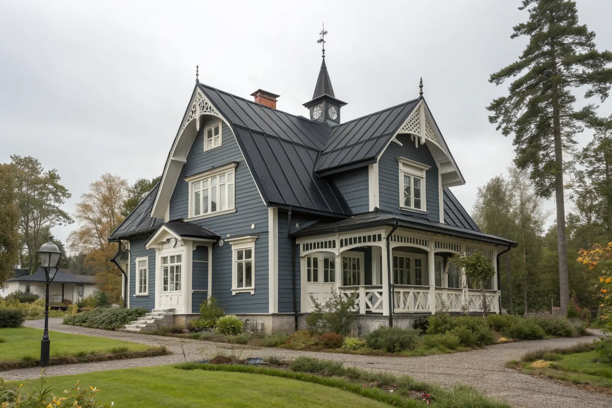

Takbyte i Huddinge
Byte av tegel-, betong- och plåttak.
Takbyte i Huddinge →Huddinge söder om Stockholm har stora villaområden i bland annat Stuvsta, Snättringe, Segeltorp, Fullersta, Trångsund och Skogås. Vi är takläggare i Huddinge för villor och radhus i alla åldrar.
Huddinges villabebyggelse växte fram längs järnvägen. Stuvsta och Snättringe har många hus från tidigt 1900-tal – trävillor med branta tak, ofta i tegel eller falsad plåt – medan Segeltorp domineras av egnahem från 1920–50-talet.
I Trångsund och Skogås tillkom villor och radhus framför allt under 1960–70-talet, med betongpannor och lägre taklutningar. Flemingsberg och Vårby har mer flerbostadshus och nyare bebyggelse.
Huddinge är kuperat med mycket skog och flera sjöar, bland annat Trehörningen och Orlången. Skogsnära tak får mer barr och påväxt, och sluttande tomter påverkar hur ställning kan placeras.
Oavsett om du behöver ett komplett takbyte eller en riktad renovering ger vi en tydlig bedömning och offert. Vi arbetar även i grannområden – se alla områden vi arbetar i.

På äldre villor i Stuvsta och Snättringe ser vi ofta tak där plåt och tegel blandats efter tidigare reparationer, rostiga ränndalar och läckage vid skorstenar. Egnahemmen i Segeltorp har ofta byggts på med kupor eller vindsinredning, vilket ger fler anslutningar att hålla täta.
Radhus och villor från 1960–70-talet i Trångsund och Skogås har nått åldern då både pannor och underlag behöver bytas. Skogsnära lägen ger mossa och barr i hängrännor, och på skuggiga takfall håller pannorna kvar fukt längre.
Huddinge är egen kommun, så bygglov och anmälan hanteras av Huddinge kommun – inte Stockholms stad. Byte till samma material och kulör kräver normalt inget lov. I äldre villaområden kan detaljplanen innehålla krav på utseende, så stäm av med kommunen innan du byter material eller kulör.
Många tomter i Huddinge sluttar eller ligger på berg. Vi bedömer vid platsbesöket hur ställning och materialhantering ska lösas.
Byte av tegel-, betong- och plåttak.
Takbyte i Huddinge →Riktade åtgärder som förlänger takets liv.
Takrenovering i Huddinge →Bedömning av skick inför beslut.
Takbesiktning i Huddinge →Nytt ytskydd på plåttak.
Takmålning i Huddinge →Skonsam tvätt och mossbehandling.
Taktvätt i Huddinge →Nytt plåttak och plåtarbeten.
Plåttak i Huddinge →Vi utgår från Bromma (Mariehäll) och tar uppdrag söderut i hela Huddinge kommun. Vi bokar besiktning och följer projektet på plats.
Läs mer om tak på villa eller jämför takbyte och takrenovering innan du bestämmer dig.
Vi arbetar även i Älvsjö.
Takläggare i Älvsjö →Vi arbetar även i Skärholmen.
Takläggare i Skärholmen →Vi arbetar även i Botkyrka.
Takläggare i Botkyrka →Vi arbetar även i Farsta.
Takläggare i Farsta →Vi arbetar även i Haninge.
Takläggare i Haninge →